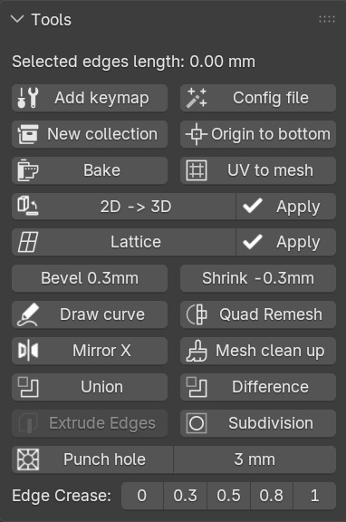

Genshoe cung cấp các công cụ mạnh mẽ giúp tăng tốc workflow trong Blender, giúp bạn modeling nhanh hơn và hiệu quả hơn.
Chuyển đổi các đối tượng được thiết kế trên mặt phẳng UV (2D) trở lại bề mặt mesh gốc (3D) một cách chính xác.
Tạo đường chỉ may uốn cong theo cạnh đã chọn, tạo chỉ vắt xổ theo bề mặt đã chọn
Giúp kiểm tra và đánh giá độ chính xác của UV map trên model một cách nhanh chóng.
Giúp thiết lập nhanh các thông số render chỉ với một thao tác.
Chuyển đổi nhanh giữa các loại vật liệu hiển thị trên model chỉ với một thao tác.
Cung cấp hệ thống phím tắt được thiết kế tối ưu cho quy trình làm việc

Genshoe được thiết kế để giúp các artist và modeler trong Blender làm việc nhanh hơn, chính xác hơn và sáng tạo hơn.